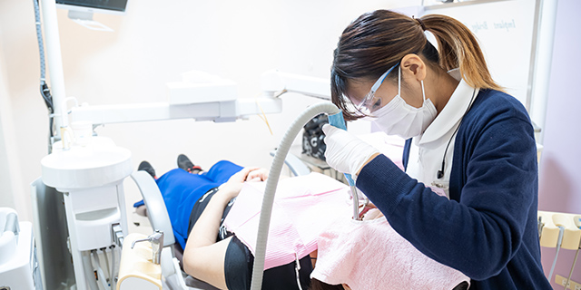
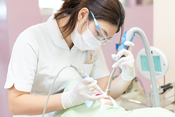
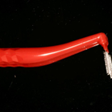
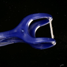
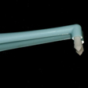
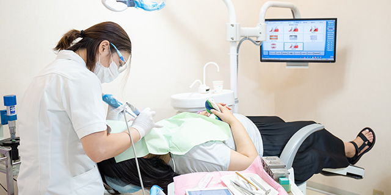
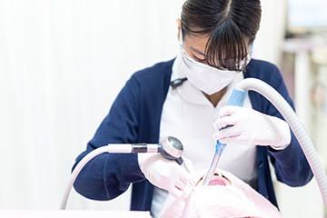
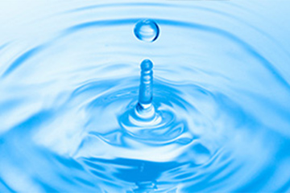

079-562-8471
079-562-8471- Home
- 予防歯科・定期検診・ボトックス
定期検診でお口のトラブルを予防しましょうPrev
お口の2大トラブルの虫歯と歯周病は、発症と進行のメカニズムが分かっているので、予防できます。病気を未然に防げば、治療は必要ありません。痛い思いをしないでお口の健康を守るために、予防の習慣をつけましょう。

そのために、毎日のセルフケアとともに歯科医院での予防処置や定期検診をおすすめします。まずはお気軽に兵庫県神戸市三宮の歯医者「北野坂鳥居歯科医院」にご相談ください。当院では、お口まわりのボトックス処置にも対応します。
予防歯科
もっとも大切だと考えているのは、お口のトラブル予防です。虫歯も歯周病も再発リスクが高いので、「はじめから未然に防ぐ」ことが大切なのです。実際に予防できれば、治療の必要がなく、お口の健康を保てます。そのための基本はお口の中に汚れを残さないことですので、毎日のブラッシングが欠かせません。歯ブラシには頼らず、歯間ブラシ、フロス、タフトブラシを使用して、ブラッシングを行わないと歯を残すことはできません。

自己流のブラッシングでは汚れが残ってしまい、虫歯や歯周病の細菌のかたまりのプラーク（歯垢）や歯石を形成してしまうリスクを負いますので、そのリスクを低く抑えるために、歯科医院でのプロフェッショナルケアを受けることをおすすめします。
歯を失う大きな原因はばい菌です。年齢と共に免疫力が落ちていくので、定期的なケアを行わないと70歳になる頃には半分近くの歯を失ってしまいます。また菌が歯ぐきの中に入り込み血液を通して身体中に行き渡るため、死因の第3位である誤嚥性肺炎等の全身疾患の原因となります。
虫歯菌や歯周病菌はネバネバした環境を好むので、ブラッシングを行い歯の表面から剥がし落とすことが大切です。特に歯の側面は歯ブラシでは届かないため、歯間ブラシを用いて重点的にブラッシングをすることが長期的な口腔内の健康につながります。
予防歯科メニュー
ブラッシング指導
当院で力を入れているのがブラッシング指導です。患者様のお口の状態や汚れの残り具合をチェックして、どのような歯ブラシを使い、どのように動かしたら効率よく汚れを落とせるかをアドバイスします。また、歯間ブラシやデンタルフロス、タフトブラシの使い方もお伝えします。
※表は左右にスクロールして確認することができます。
| 歯間ブラシ | デンタルフロス | タフトブラシ |
|---|---|---|
|
 |
 |
 |
PMTC
歯科医院で行う歯のクリーニングです。特殊な器具を使って、口腔ケアのプロフェッショナルの歯科衛生士が患者様のお口の中を徹底的にきれいにします。毎日のブラッシングでは落としきれない歯と歯の間や歯と歯ぐきの溝の汚れもしっかり落とします。
細菌チェック
当院ではすべての患者様のお口の中の細菌チェックを行います。お口の中にはたくさんの細菌が存在しますが、その中で、虫歯や歯周病を引き起こす細菌が含まれるか、どのくらい存在するか、どのくらい活発かを調べます。そして発症しないような対策につなげるのです。
細菌は虫歯、歯槽膿漏を引き起こすだけでなく、歯茎の中に入り込み、さらには血液の中にも入り込みます。そして75歳以上の人の死因第3位の誤嚥性肺炎の大きな原因になるだけでなく、心臓の弁に付着し、糖尿病を悪化させ、さらには、脳にも入り込みアルツハイマー病を憎悪させることも知られています。
定期検診
虫歯も歯周病も再発しやすい病気です。せっかく治療した歯の健康を損なわないようにおすすめするのがメンテナンスです。お口の状態により2ヶ月～6ヶ月に1回の間隔で定期検診を受けましょう。虫歯も歯周病も初期段階ではほとんど自覚症状があらわれません。そして、エナメル質の虫歯「C1」から象牙質の虫歯「C2」に進む時間は3～4ヶ月かかるといわれています。そのため、定期検診を受けていれば、もし、すでにお口のトラブルに見舞われていたとしても初期段階ですので、早期発見・早期治療につながり、比較的かんたんな治療で済むのです。

定期検診では、歯科医師や歯科衛生士がお口の中をすみずみまでチェックします。そして歯のクリーニングも行いますので、お口の中の変化を見逃しません。汚れが残りやすい部位などのブラッシングの仕方などもアドバイスして、次回の定期検診までお口の健康を保っていただけるようにサポートします。

定期検診は虫歯や歯周病予防を主眼にしていますが、お口の中の汚れが落ちるので、すっきりしますし、お口の中で悪臭を発生させる汚れや細菌も減らせるので、口臭予防にもつながります。
そのためサロンに通う感覚で3ヶ月に1回程度、通院される方も少なくありません。毎日のブラッシングに歯科医院での定期検診を加えて、お口の健康を守りましょう。
ボトックス処置

注射で筋肉のけいれんや緊張を和らげるのがボトックス処置です。美容の分野ではシワやたるみを改善するために使用されるおなじみの処置ですが、歯科では、歯ぎしりや食いしばりを緩和するためや、筋肉の緊張をほぐすために使用されます。
歯ぎしりや食いしばりが続くと大切な歯が摩耗してしまったり、欠けてしまったりするので、3ヶ月に1度のペースで3年ほどボトックス処置を継続することがあります。
ボトックス処置はこんな方におすすめです
※表は左右にスクロールして確認することができます。
歯ぎしり・食いしばり |
顎関節症 |
顔を引きしめたい |
|---|---|---|
| ストレスや緊張から無意識に歯に大きな負担をかける歯ぎしりや食いしばりは、歯が欠けたり、削れたり、顎に負担をかけたりします。ボトックス処置はマウスピースを使った治療よりも短期間に効果をあらわします。 | 「口が大きく開かない」「顎が痛い」「顎がカクカク・シャリシャリ鳴る」などの症状が続く場合は顎関節症が疑われます。顎関節へのボトックス注射を行うと、筋肉の緊張がとけ、動きが和らかになります。 | 顎の筋肉がかなり発達しているとエラが張って見え、顔が大きく見えてしまいます。ボトックス注射により、余計な筋肉の緊張がとれると、エラが目立たなくなり、フェイスラインがスッキリします。 |
費用のご案内
| ボトックス処置（100ユニット） | 15,000（税別） |
|---|
 WEB予約
WEB予約